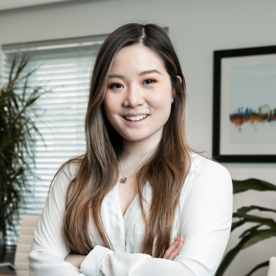

Columbia Business School
MSM, Marketing Science
HonorsColumbia Fellows (Merit Scholarship recipient)
ClubsProduct Marketing ClubTechnology ClubColumbia Women in Business
Marketing Science · B2B Digital Marketing
MSM Marketing Science candidate at Columbia Business School, with B2B digital marketing experience at technology marketplaces and high-growth startups in London.

01
MSM, Marketing Science
HonorsColumbia Fellows (Merit Scholarship recipient)
ClubsProduct Marketing ClubTechnology ClubColumbia Women in Business
MSc, Industrial and Organisational Business Psychology
October 2020
BA Psychology
September 2018
LeadershipPi Sigma Epsilon (Marketing Fraternity), Director of Marketing 2017–2018
02
03
SEOGA4CRM (Hubspot)Meta AdsMixpanelNotionWordpressWebflowFigmaSQLAdobe PS & AI
PPC Google Ads | Chartered Institute of Marketing | April 2025
Neurodiversity Employee Resource Group (ERG) Chair | Bridebook (2023–2026)
Marketing Intern at Burberry HK (2017)
Marketing and Sales Intern at IHG (2016)
Assurance Intern at PWC (2015)
Cantonese and Mandarin (Fluent)Japanese (Advanced)German (Intermediate)
Taiko DrummingCustom PC BuildingCookingSkiing